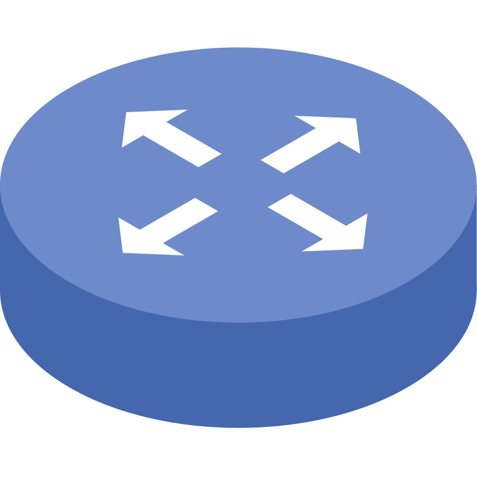

Jestem studentem 3. semestru cyberbezpieczeństwa. Technologie sieciowe, infrastruktura chmurowa oraz bezpieczeństwo systemów operacyjnych to moje główne obszary zainteresowań. W wolnym czasie aktywnie trenuję umiejętności ofensywne, biorąc udział w wyzwaniach CTF (Hack The Box, TryHackMe, picoCTF) oraz rozwijając autorskie narzędzia do analizy bezpieczeństwa. Poza ekranem komputera pasjonuję się inwestowaniem, piłką nożną oraz grą w szachy.
Konrad Matusik
Student Cyberbezpieczeństwa
O mnie
Wybrane Projekty
 C++ / CLI
C++ / CLI
Menadżer Haseł CLI
Narzędzie konsolowe do bezpiecznego przechowywania danych napisane w C++, wykorzystujące niestandardowe struktury pamięciowe do ochrony kluczy.
 Cybersecurity
Cybersecurity
CTF Write-ups
Zbiór technicznych analiz (write-upów) dokumentujących eksploatację podatności systemowych i sieciowych podczas turniejów Capture The Flag.

Sieci KomputeroweInfrastruktura Cisco
Projekt wdrożenia dynamicznego routingu OSPF, redundancji, list ACL oraz kompleksowej segmentacji VLAN dla symulowanej infrastruktury enterprise.